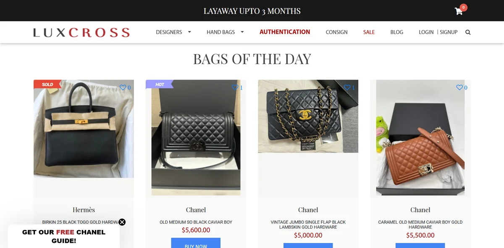
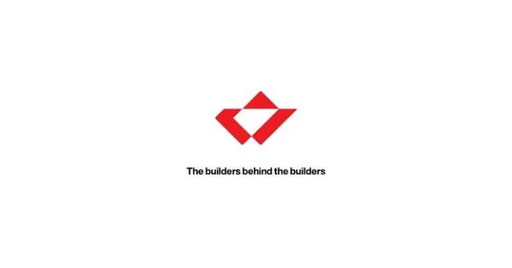
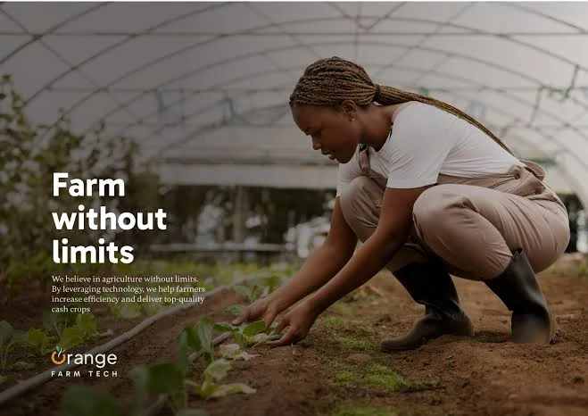
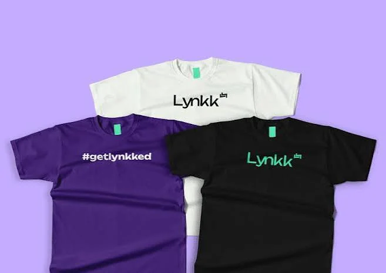
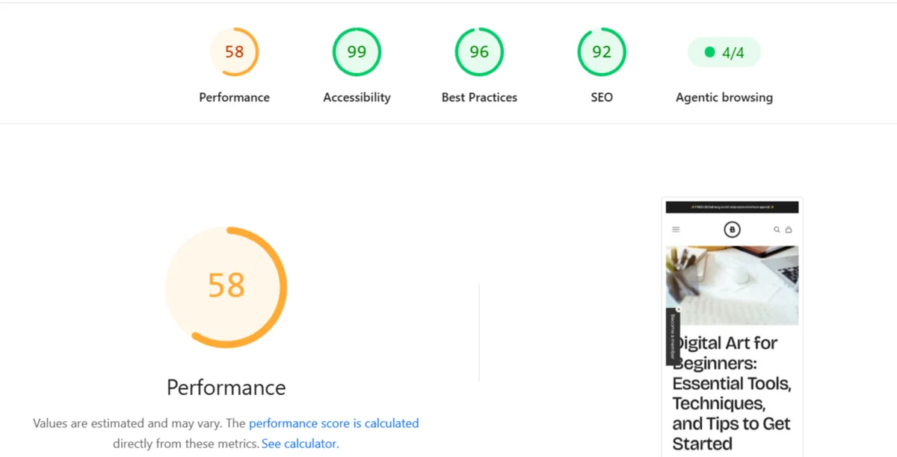

Luxcross
Ran a luxury re-sale on-site in Dubai and they wanted to expand their enterprise. I gave the website a voice, and buyers worldwide started finding it.
Nerd out hereThree deep dives and two quick stops. Pick one and nerd out.

Ran a luxury re-sale on-site in Dubai and they wanted to expand their enterprise. I gave the website a voice, and buyers worldwide started finding it.
Nerd out here
Started out as an engineering talent company with no website at all. The team and I built it from scratch, created the copy and grew search through blog posts readers came back for.
Nerd out here
A smart farm needed one site for buyers, investors and trainees. One month and a brief that keeps on giving.
Nerd out here
An early-stage fintech and web3 startup with no brand voice and readers new to digital payments. I created the content framework and voice from the ground up, then reshaped Medium articles for Instagram, X, LinkedIn and Discord. Audience engagement grew 80% in two months.
Read my Lynkk articles
Performance had a rough day, but look at that SEO score.
Contemporary African art for buyers who could not see the work in person. I created artist spotlights, product pages and blog posts, managed Shopify listings and supported the sale of at least 20 paintings.
Read my BetterShared article